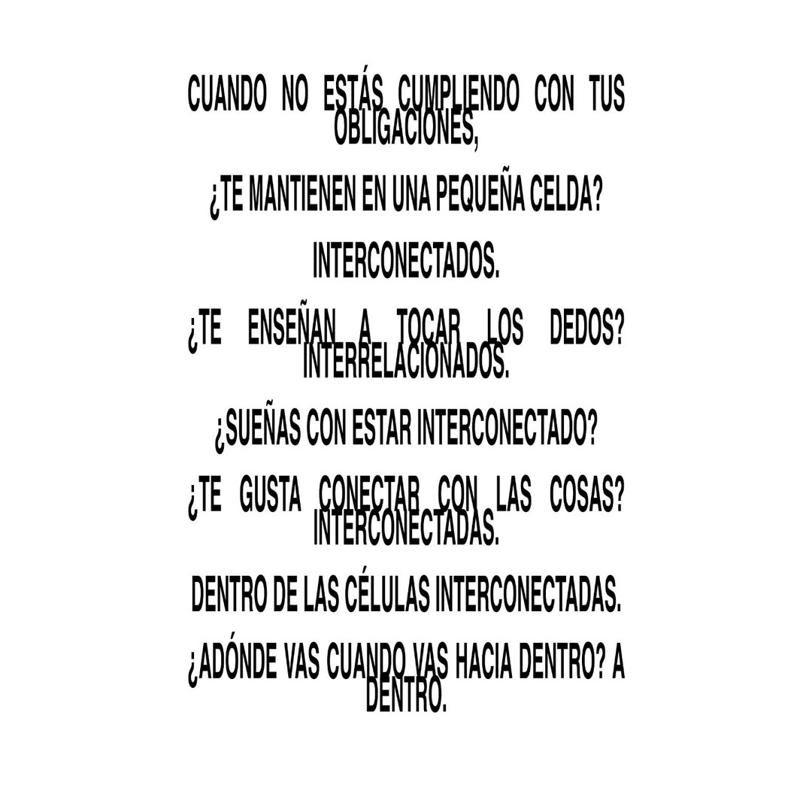

IBV es una organización sin dominio público basada en la manipulación y vandalización audiovisual. 4 agentes, dispositivos o ejecutores que se encargan de controlar una serie de imágenes sin composición alguna, un manifiesto audiovisual entregado a la pantalla.
Muestra para estudio creativo BRUTA: hero a pantalla completa con vídeo, navbar transparente, efecto de scroll con capa fija, tipografía tipo cartel y sección editorial con imagen y vídeo. Maquetación en HTML5 y CSS3, JavaScript mínimo (sin framework), diseño responsive y lista para publicar en Vercel.
Valor entre 320 y 380 USD negociable